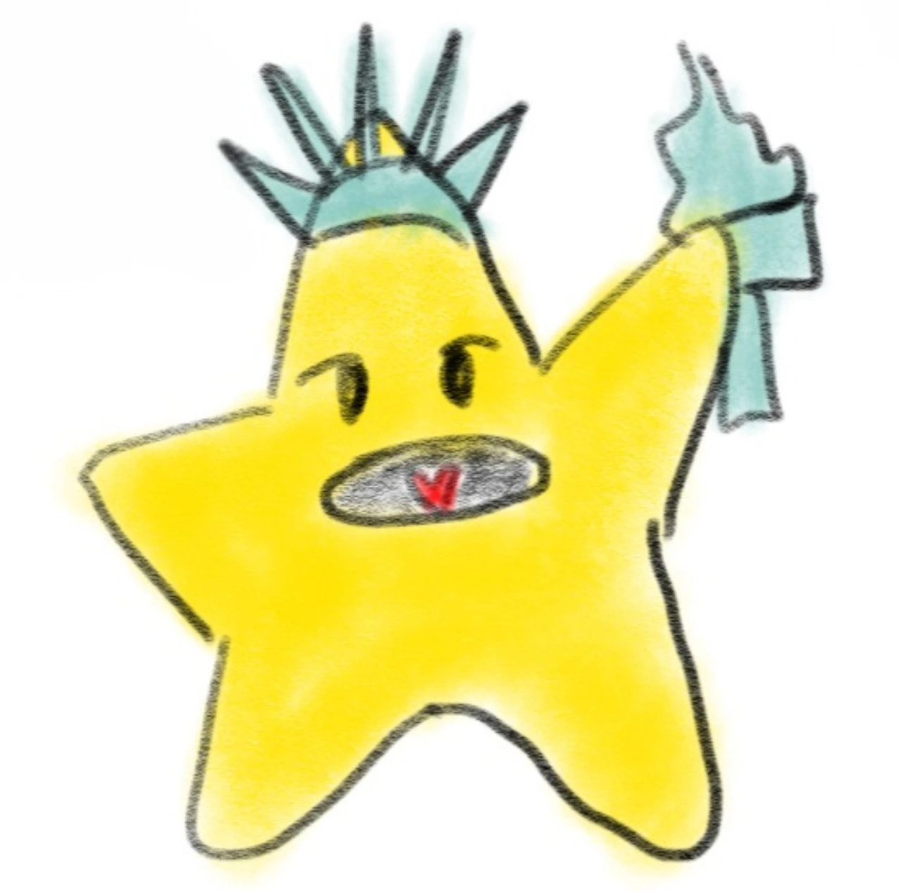
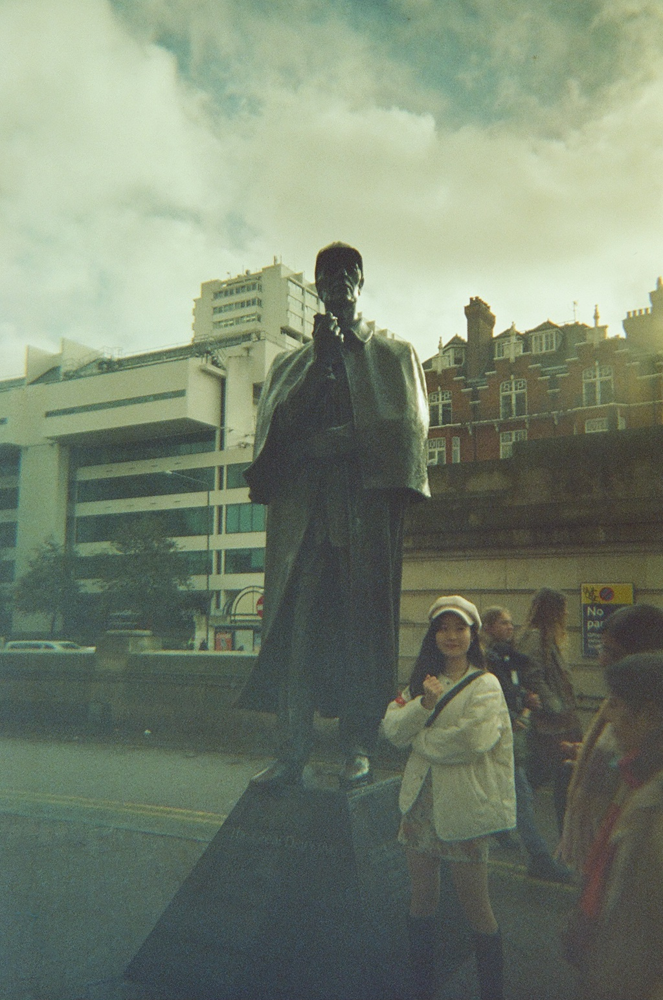
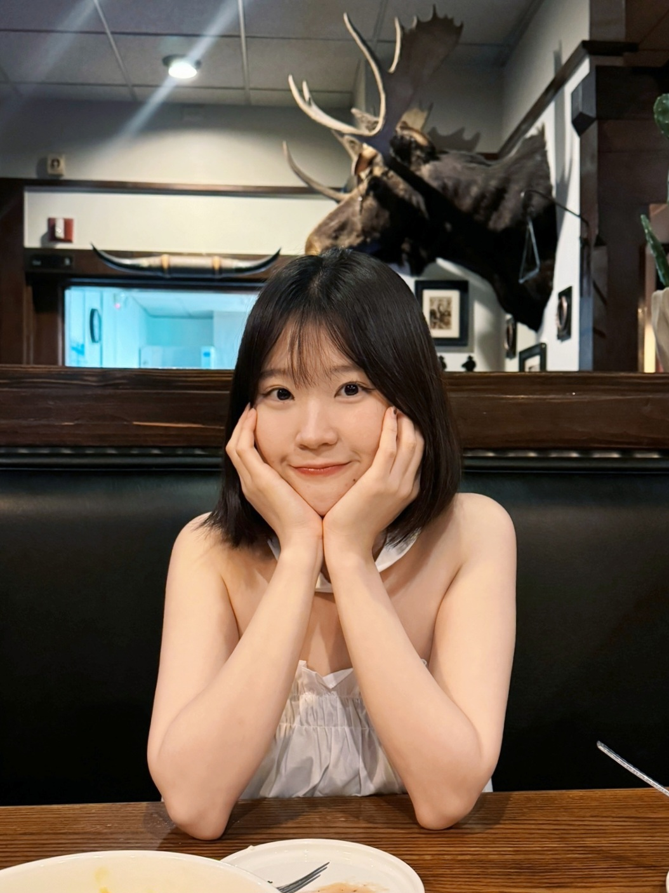
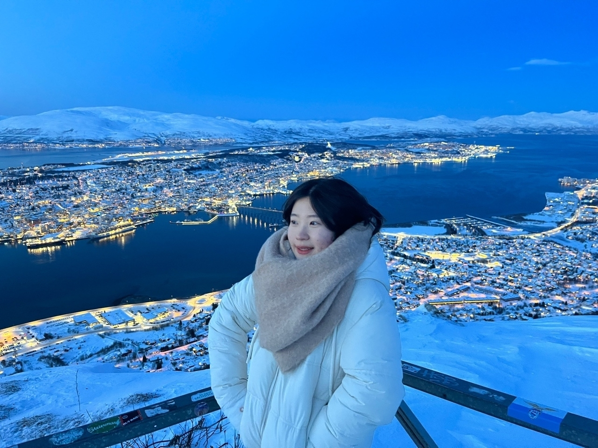
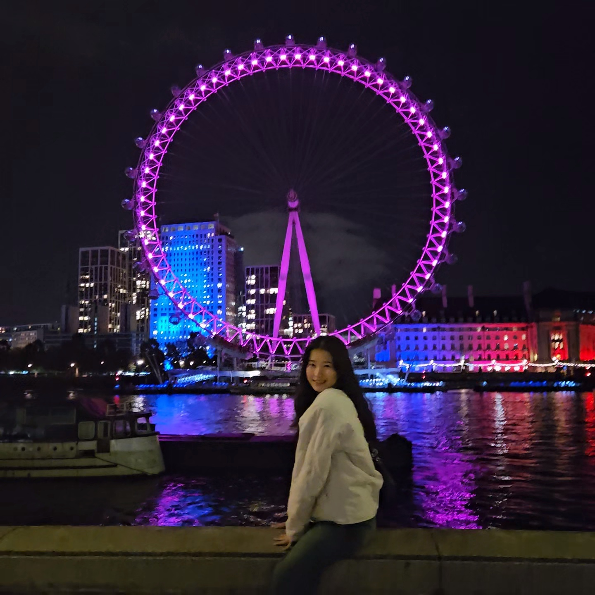
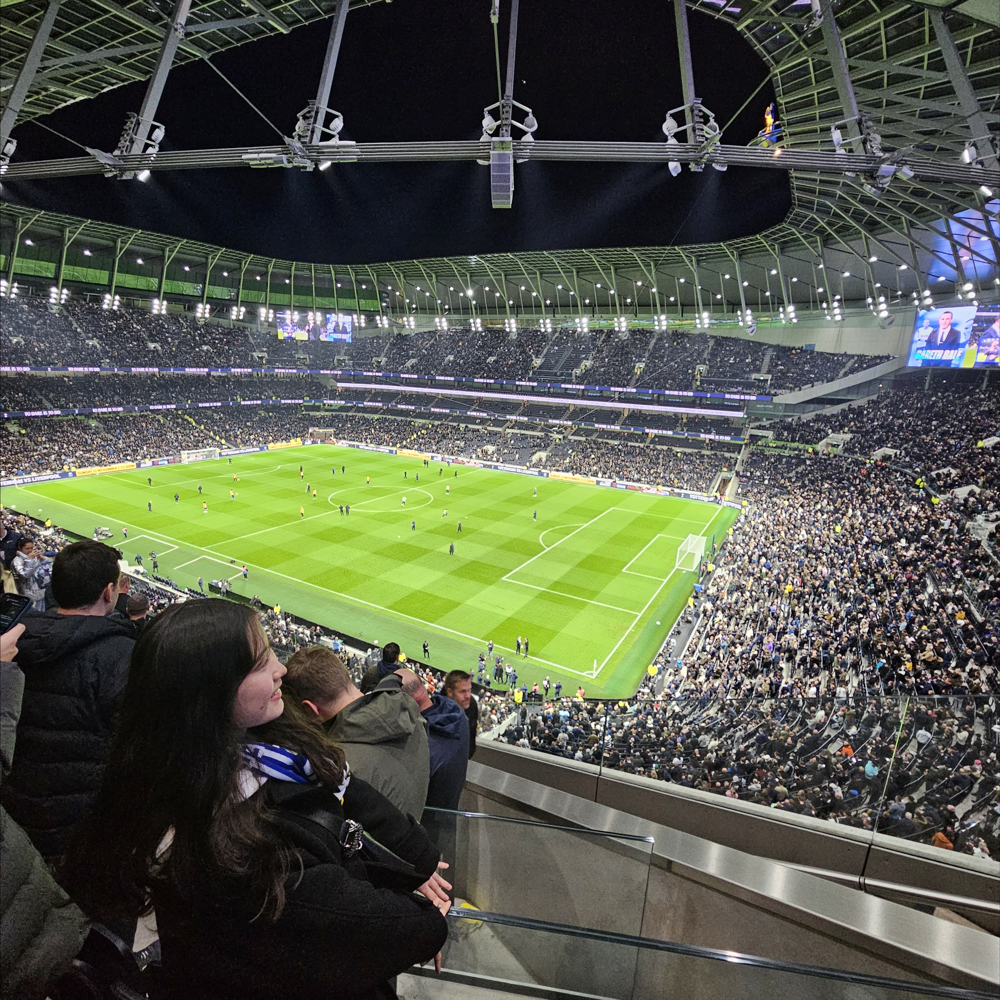
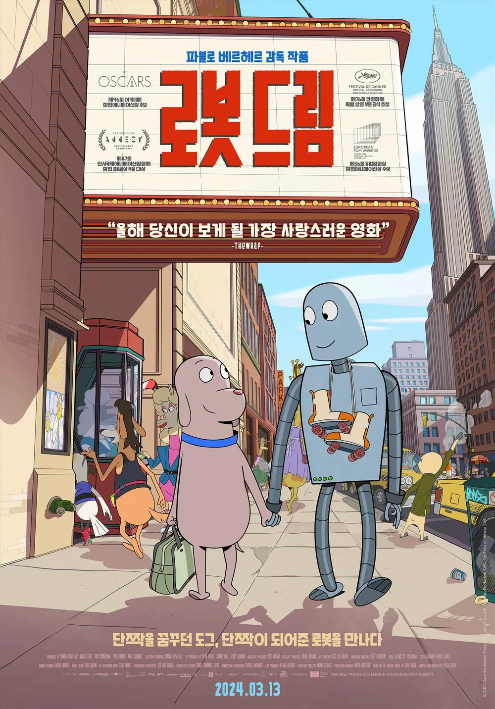

HTML 시멘틱 태그
header, nav, main, section, article, footer 등 시멘틱 태그의 역할과 사용법을 배웠다.

안드로이드의 빛나는 스타터, 별터입니다 ★
안녕하세요. 저는 우테코 안드로이드 과정에 소속된 별터입니다 ⭐
근처 맛집인 홍루원(중식당 | 해물짬뽕 맛집)을 초등학생 때부터 다녀서, 이번에 판교 캠퍼스가 이 근처라는 것을 알았을 때 행복했습니다.
디저트는 에그타르트 참 좋아하는데요. 우드스톤 에그타르트 괜찮은 것 같습니다.
가끔 개발과 관련된 블로그도 쓰는데요. 관심 있으신 분들은 아래 링크로 방문해주시면 감사하겠습니다.
요즘 취미는 영화 보기, 미드 보기, 보드게임 하기, 피포페인팅 하기입니다. 작년 겨울엔 포도주를 담궜습니다.
참고로, 프로필 사진은 제가 그린 별터 캐릭터입니다 😀
[진진가]
- 파충류 박물관 가서 뱀을 어깨 위에 올릴 수 있어요
- 햄스터 만지는 것 좋아해요
- 미니멀리즘을 지향해요.
| 이름 | 김선아 |
|---|---|
| MBTI | ENFTP |
| 취미 | 피포페인팅, 실내자전거 타며 유튜브 시청, 미국 드라마 보기, 담금주 만들기 |
| 좋아하는 음식 | 해물, 고기, 따뜻하고 자극적인 음식 💗 |
여행 사진 모음







평범하면서도 행복한 일상을 같이 보내고 싶은 반려 로봇을 입양한 '도그'. 반려로봇과 강아지 둘의 이야기.
대사 하나 없어서 조금 지루할 수도 있지만, 보고 나면 하루종일 몽글몽글하고 기분 좋은 영화입니다.
'브레이킹 배드'의 스핀오프 작으로, 미국 양아치가 변호사가 되기까지의 이야기입니다.
개인적으로 이 드라마를 보고, 변호사 직업에 대한 궁금증이 생겨서 법무법인 아르바이트를 했었습니다.
오늘 새롭게 배운 것들을 기록합니다.
header, nav, main, section, article, footer 등 시멘틱 태그의 역할과 사용법을 배웠다.